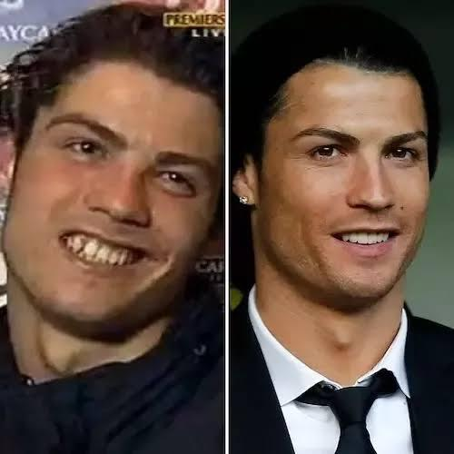

Cristiano Ronaldo's life before fame was marked by extreme poverty in Madeira, Portugal, living in a small house and sharing a room with his siblings. He faced financial difficulties, a lack of resources, and at the age of 12, he moved alone to Lisbon, dealing with loneliness, school bullying, and a heart condition that almost ended his career, overcoming everything with intense discipline.
After fame
Cristiano Ronaldo's life after achieving fame has become a mix of absolute success, wealth, and loss of privacy. Recognized worldwide, he can barely go out in public without being stopped. With a routine focused on intense training and a strict diet, this is why the people call him "The Robot", he has transformed into a successful businessman and global icon, maintaining that mental intensity both on and off the field.
